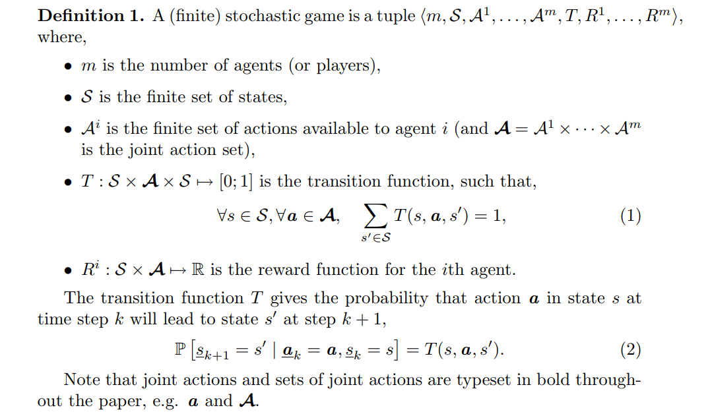
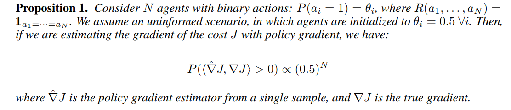
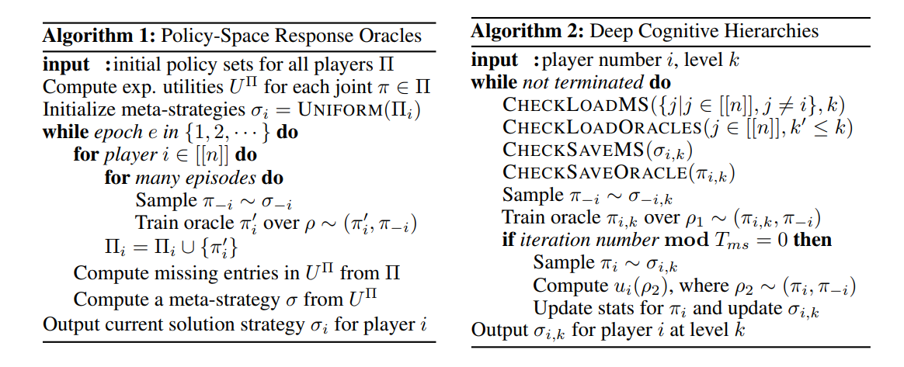

调研汇总multi-agent方向的方法
Introduction
MARL的问题设定早在上个世纪就已经被提出，在深度学习与强化学习兴起之前，在POMDP、game theory、evolutionary strategy等领域都已经有大量研究工作围绕该问题展开
MARL一般采用stochastic game作为其数学定义，相比于MDP，stochastic game可以看作是MDP在多智能体方面的延伸，其state transition同时受到所有agent的action影响，where each agent can only get local observation instead of global state from the environment，reward由global state给出，每个agent的reward定义可以不同

除了single-agent RL的常规问题以外，MARL会带来的的新问题包括：
- Non-stationary: 假设每个agent的observation都包含有其他agent的行为与状态，当所有agent同时从环境中学习时，每个agent的policy都会发生变化，使得environment的state transition probability随之变化，这违背了RL对MDP中state distribution为stationary distribution的基本假设
- Non-Markovian: 在2011年的文章 The World of Independent Learners is not Markovian 中，作者指出对于independent learners所构成的世界环境，如果各个agent之间不存在沟通，那么该环境不满足Markov性质，这也打破可MDP有关Markov性质的基础假设
- Overfitting to the other agents’ policies: DeepMind发表于NIPS-2017的文章 A Unified Game-Theoretic Approach to Multiagent Reinforcement Learning 指出，用single-agent RL训练得到的policy往往容易过拟合对手策略，因而无法在面对不同策略的对手时保持足够的泛化能力。这种现象在游戏AL任务中非常普遍，但截至目前为止，学术界很少有对强化学习模型泛化能力的系统性研究
- Action space too big: 一种将MARL转化为普通RL的方法是将所有合作博弈的agent认为是一个整体，所有agent的observation集合构成了整体的global state，所有agent的action构成了整体的action，这样的做法对agent的数量增加不具有可扩展性，假设环境中一共有n个agent，每个agent可选择的action有k种，那么整体policy的action就有 $n^{k}$ 种action，指数级大小的action space对于需要scalable的环境来说是无法接受的。截止目前为止，学术界很少有研究聚焦如何在拥有大量agent的环境中训练MARL模型
- Communication: 尽管agent的observation只包含了global state的局部信息，agent可以通过交流来获取更多的信息，假设所有agent都可以互相交流，且交流是没有成本的，那么实际上每个agent都相当于拥有了整个global state的信息。近年来很多MARL的研究假设agent之间互相交流是有成本的，核心问题在于如何使用尽可能少的交流次数使得模型达到令人满意的performance。需要指出，这种假设对于一些特定领域的MARL应用落地是很有价值的，例如network routing问题中每个agent可能对应的是一个路由器，不同路由器之间每次交流对应数据报文互传，交流过多可能会严重降低网络的传输效率
OpenAI系列
OpenAI做MARL的主要落脚点有二，一是连续state-action space的机器人控制问题，二是如Dota这样复杂环境下的游戏AI。前者在现实环境中模拟成本较高，后者的trajectory极长且state space为partial observable，由此在本身就已经足够巨大的解空间中为inference带来不确定性，以上两类任务对强化学习算法共同的要求就是高效的exploration，让模型收敛所需的样本量尽可能少，也正是在这种背景下，OpenAI从一开始的着眼点就是算法的迭代效率
Multi-Agent Actor-Critic for Mixed Cooperative-Competitive Environments
MARL比较具有开创意义的工作，2018年BAIR的MADDPG，学术界绝大多数的MARL研究要从这里说起
作者首先考虑一个很简单的场景：假设所有agent的policy都是概率为0.5的Bernoulli distribution，假设损失函数梯度 $\nabla_{\theta}J(\theta)=\mathbb{E}_{s\sim{d^{\pi},a\sim\pi}}[Q^{\pi}(s,a)\nabla_{\theta}\log\pi_{\theta}(a|s)]$ ，则单个样本估计出的随机梯度与真实梯度夹角为锐角的概率随着agent数量增加而指数级递减

方法也比较简单，就是用centralized critic
文章放出了一个叫做 multiagent-particle-envs 的实验环境，相比之下
- MuJoCo环境的主要难点在于high dimensional continuous state and action space，如何在无穷大空间内explore，至于reward反而由于state space是连续而变得differentiable，众所周知differentiable的reward是最容易学习的
- Atari的主要难度在于如何在discrete action space下合理地解决credit assignment问题，如何应该long-term delayed reward，难度以Montezuma’s revenge为最
- 而MPE的主要难点还是在于multi-agent，其他问题都很大程度上简化了，MPE的reward定义一般是距离某个目标的距离，single agent的环境下很容易学习的目标，在multi-agent的环境下有可能变得复杂一些，而且有些环境涉及到communication，有些环境是zero-sum game有些是collaborative game
Robust Multi-Agent Reinforcement Learning via Minimax Deep Deterministic Policy Gradient
2019年AAAI有一篇follow的工作M3DDPG，主要解决的问题是MADDPG框架下MARL训练的robustness：作者想要在优化每一个agent时，优化的场景都是对于这个agent当前state下的worst case opponent strategy。在连续动作空间下，可以借用SL中的adversarial training的思路，采用一步gradient descent来调整centralized Q-function的其他agent的action
问题在于为什么我们希望在某个agent的worst case opponent strategy做优化？作者提出的解释是这样可以学习到更robustness的policy，我对此表示怀疑
首先，文章中没有实验验证单步gradient对Q的影响是怎么样的，在SL中适用的piecewise-linearity vulnerability，是否在RL中仍然显著？如果in practice单步梯度对Q影响甚微，那么这个方法基本就可以看做是MADDPG的approximation了
我们退一步先假设单步梯度确实可以显著影响到Q-value，那么每次用梯度更新对手策略时，为了得到一个较低的Q，往往得到的对手policy都较为激进。例如在MOBA类游戏中，激进的策略往往包含越塔强杀，强推高地，偷Roshan或者是开雾野区抓人，越是激进的策略就越容易被针对，那么每次都在worst case处优化policy实际上反而过于乐观，当前agent很容易在激进的对方策略下找到一个可以使自己Q-value很高的点，但这个位置的高Q-value并不能体现出robustness
真正的robustness应该是当前agent可以对任意的对方策略下都保证Q不太差，难点在于优化的目标是$\pi$，而实际样本中只有$a, a^{-}$
这里可以考虑MARL中一个比较老的方法minimax-Q，minimax-Q在tabular case下是保证收敛的，Q-function每次更新都会稳定地沿着Nash equilibrium移动，且每步更新保证单调性，作者也在Conclusion一节中指出，连续空间下如何解决在Q-function中找Nash equilibrium，是个很有意义的问题
Multiagent Soft Q-Learning
以上方法的基础框架都是DDPG，DDPG作为deterministic的RL算法，最显著的特点是给定一个state，其输出的action是deterministic的，用game theory的语言来说就是DDPG学的是一个pure strategy
问题在于我们知道，multi-agent设定下pure strategy的Nash equilibrium不一定存在，更常见的形式是mixed-strategy，例如两个人玩石头剪刀布，游戏的Nash equilibrium一定是三种动作上的均匀分布，任何一方如果选择pure strategy则一定会被对手发现并找到针对性策略打败
因此我们可以得到的一个结论是：MARL问题中stochastic actor相比deterministic的actor具有天然的优势，因为stochastic actor可以直接学习到mixed-strategy
目前stochastic actor的两类主流方法被Berkeley/OpenAI垄断，一类是包括TRPO、PPO在内的利用二阶信息进行优化保证策略迭代稳定性的方法，另一类是包括SQL、SAC在内的最大熵RL方法，作者本文研究的内容就是用SQL来直接学习mixed strategy
本文的实验内容比较水，最主要的贡献在于如何将SQL引入MARL问题上，作者的方法是让每个agent输出的action概率分布都包含全局所有agent的action，只有自己的action真正用于与环境交互，用强化学习进行训练，而其他agent的action可以用监督学习直接回归得到
Actor-Attention-Critic for Multi-Agent Reinforcement Learning
主要的贡献是用self-attention去学习critic应当关注哪些agent，发表于ICML-2019，NIPS-2019的MARL文章还没整理过，目前看到的sota。与上文类似，作者使用SAC这种最大熵正则的方法来直接学习mixed strategy
Section 3整体写的比较混乱，自己的观点，自己提出的方法，别人方法的问题，以及别人提出的观点与方法混在一起，幸而这篇文章理论性没有很强，想知道作者到底干了什么还是直接去github看代码吧
DeepMind系列
A Unified Game-Theoretic Approach to Multiagent Reinforcement Learning

Open-ended Learning in Symmetric Zero-sum Games
DeepMind的力作，发表于ICML-2019，文章很好地从game theory的角度解释了几个重要问题：
- 为什么DeepMind做StarCraft要用AlphaLeague和Nash distribution这么麻烦的事情？
- 传统的同一模型加载两边阵营的self-play训练方法存在什么问题？
- 如何训练出能够打赢不同policy对手的agent？
Reinforcement Learning for Multi-Objective and Constrained Markov Decision Processes
2019年年初挂在Arxiv的文章，technical detail还没看，但abstract提出的问题非常有趣：作者想要解决zero-sum game场景下，一方以RL最大化total discounted reward为目标，另一方以最大化一个bandit问题为目标，作者在Q-learning的基础上拓展，得到了一个可以保证收敛到最优的方法
UNDERSTANDING & GENERALIZING ALPHAGO ZERO
还没来得及看，mark